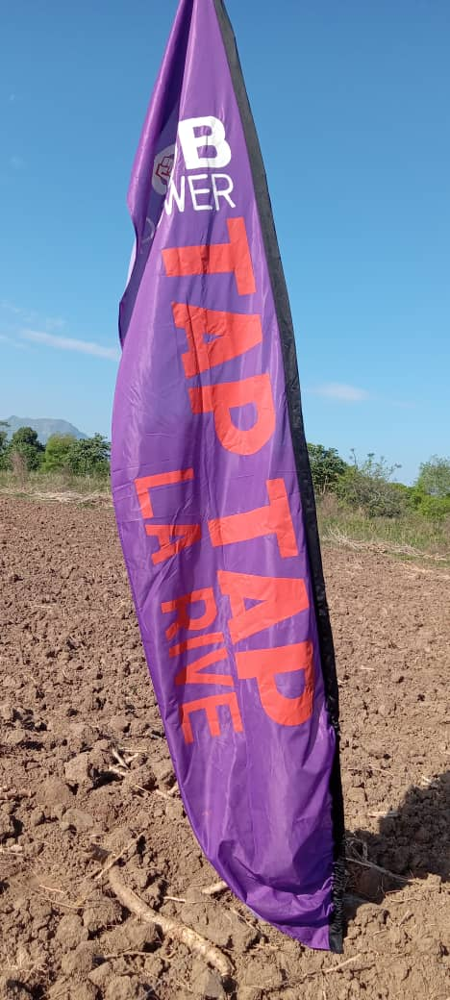

Pour organisations, propriétaires et citoyens engagés
Ensemble, Bâtissons un Avenir Plus Solidaire Pour Haïti.
Vous êtes propriétaire d'un terrain agricole, dirigeant d'une entreprise, membre d'une organisation communautaire, ou tout simplement un citoyen engagé ? KONKRET vous invite à devenir partenaire du changement en mettant vos ressources, idées ou infrastructures au service de la jeunesse haïtienne.
Le partenariat avec KONKRET n'exige pas de capital. Il exige une intention. Nous construisons ensemble les conditions pour que des jeunes travaillent, apprennent et avancent... sur votre terrain, dans votre atelier, autour de votre activité.
Vous avez des terres inexploitées ? KONKRET y place une équipe de jeunes, assure la gestion et partage les bénéfices selon une entente claire.
Vous gérez une activité économique et souhaitez y intégrer des jeunes formés dans un cadre structuré et sécurisé.
Offrir un stage ou un poste d'entrée à un jeune suivi par KONKRET. Idéal pour les institutions, bureaux et structures de formation.
Outils, intrants, matériaux ou services... Votre contribution en nature peut changer la productivité d'un site entier.
Un local, une salle, un espace extérieur... Mettre un lieu à disposition pour nos formations ou réunions coopératives.
Vous avez une idée, un concept, une experience à partager ? KONKRET peut en faire un projet-pilote reproductible dans d'autres zones.

Mon terrain n'était qu'un champ vide. Aujourd'hui, il est cultivé par une équipe de jeunes motivés, et il fait vivre plusieurs familles. Je n'ai rien eu à gérer, KONKRET s'est occupé de tout.
Partenaire depuis 2023 · Milot, Nord, Haïti